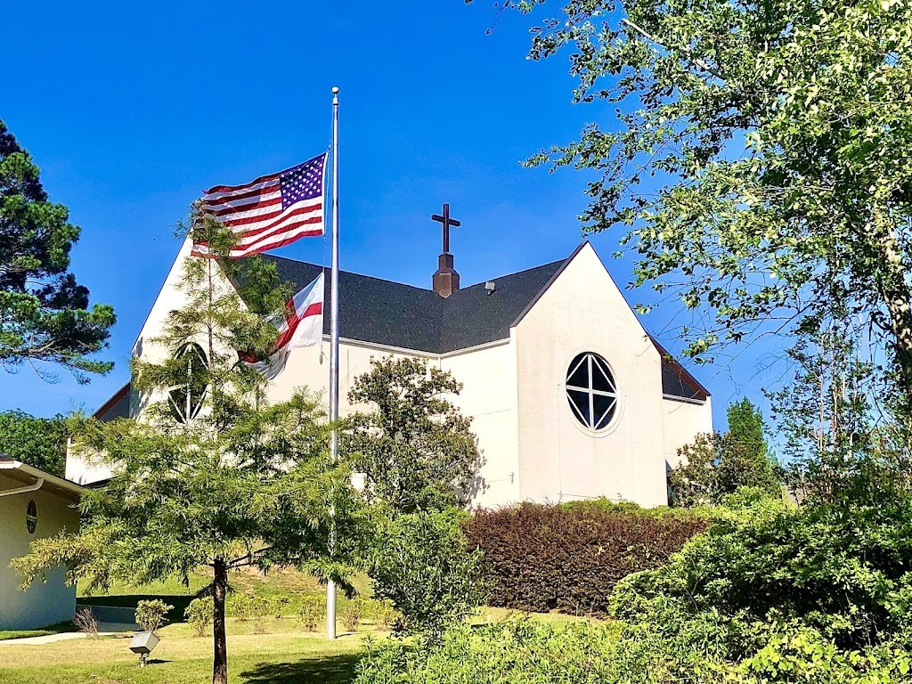
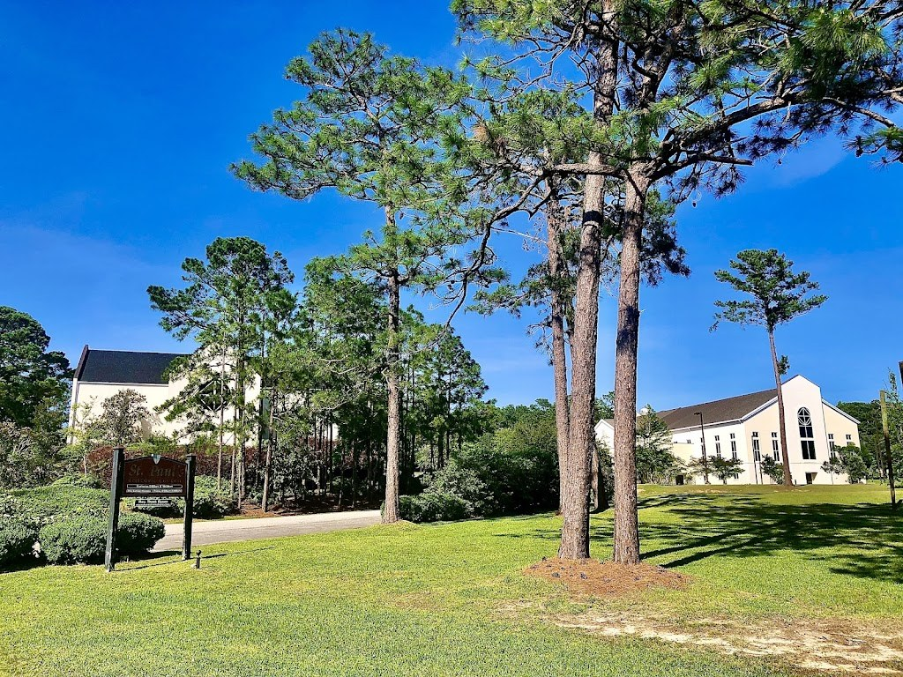
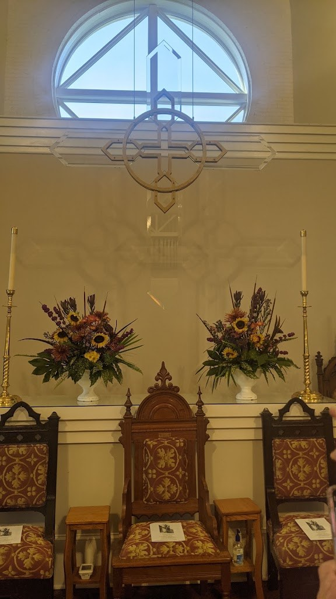

Visit St. Paul's Episcopal Preschool
A Christian preschool in Daphne for ages 1 through Pre-K 4, with morning and after-school care for working parents.
Address: 28788 North Main Street, Daphne, AL 36526
Hours: Monday through Friday, 7:00 AM to 5:30 PM.
Phone: (251) 626-2774
Gallery



All three photos are real photos from the St. Paul's Episcopal Church listing on Google Maps, the same campus as the preschool. They show the white church building exterior with an American flag, the lawn view of the church, and the altar interior.
Contact
Call (251) 626-2774 Email officestpaulsdaphne@gmail.com
St. Paul's Episcopal Preschool serves Daphne, AL. Questions? Call (251) 626-2774.